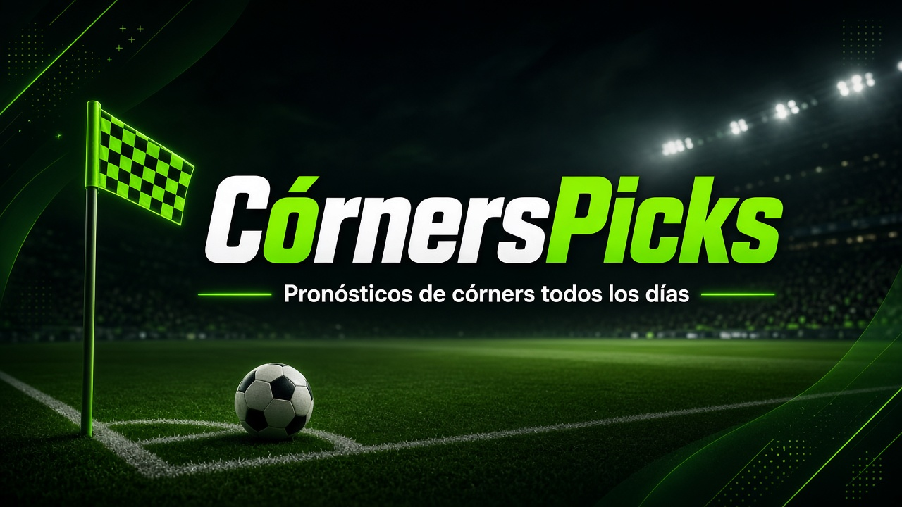

Cómo trabajan los bots de CórnersPicks
CórnersPicks es un canal de pronósticos de córners. Detrás de cada pick hay un bot que revisa el calendario, cruza estadísticas de varias fuentes y aplica unas reglas fijas para decidir si un partido entra o no. Este sitio documenta ese trabajo desde cero: qué mercado mira cada bot, cómo se definieron sus parámetros, cómo fueron cambiando y cómo les ha ido, con todas las picks, incluidas las falladas.
🔥 Picks del díaLas picks pendientes de cada bot, en la hora de tu zona, y los resultados de ayer → 💬 Comentarios y sugerenciasPropón ligas o mercados, reporta errores o comenta las picks →Resumen general
Totales de los tres bots
Suma simple de los tres registros (cada bot con su propia cuota: real, promedio o supuesta). Sirve como referencia, no como un solo sistema.
Comparativa
Unidades acumuladas
% de acierto acumulado
Ojo: los bots juegan mercados distintos y con cuotas distintas, así que el % de acierto no se compara directamente. A cuota 1,60 hace falta acertar el 62,5 % para no perder; a 1,70, el 58,8 %; a 1,90 (cuota supuesta de Cornes en Vivo), el 52,6 %. Las unidades sí reflejan el resultado neto con 1 unidad por pick. Ver metodología.